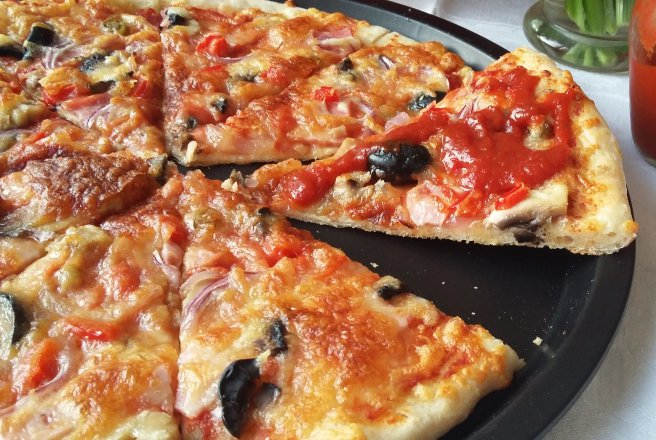

Pizza cu ciuperci

Ingrediente
- Blat
- 500g faina alba
- 1 lingurita sare
- 250ml apa
- 2g drojdie proaspata
- 1 lingurita zahar
- 20ml ulei
- Topping
- sos de pizza homemade
- 5-6 felii de sunca
- 5-6 ciuperci champignon
- masline negre
- ceapa rosie
- ardei gras rosu
- ardei iute
- 300g mozzarela
Mod de preparare
Blatul
- Intr-o craticioara, se incalzesc 100 ml apa
- Se adauga zaharul si 2 lg faina, apoi drojdia zdrobita
- Se amesteca bine pana se lichefiaza, apoi se lasa sa creasca
- Separat se cerne faina, se presara 1 lgt sare, apoi se toarna maiaua si restul de apa incalzita putin cate putin
- Se adauga si uleiul si se framanta un aluat elastic si nelipicios
- Se lasa sa dospeasca, cel putin jumatate de ora
Topping-ul
- Se taie sunca bucatele mici, ciupercile se feliaza, ceapa se taie julienne, iar gogosarii se taie cubulete
- Se ia jumatate din aluat si se intinde in forma rotunda (sau in functie de tava in care se va coace pizza)
- Se pune blatul in tava, apoi se unge cu sos pentru pizza, se asaza bucati de sunca, ciuperci, masline, ceapa, ardeiul gras, iar deasupra se presara mozzarela data pe razatoarea cu gauri mari
- Se pun rondele de ardei iute
- Se da tava la cupotrul preincalzit, la 200 de grade, pentru circa 15-20 de minute, sau pana se rumeneste frumos deasupra
- Se serveste cu ketchup de casa
- Pofta buna!
Inapoi la retete